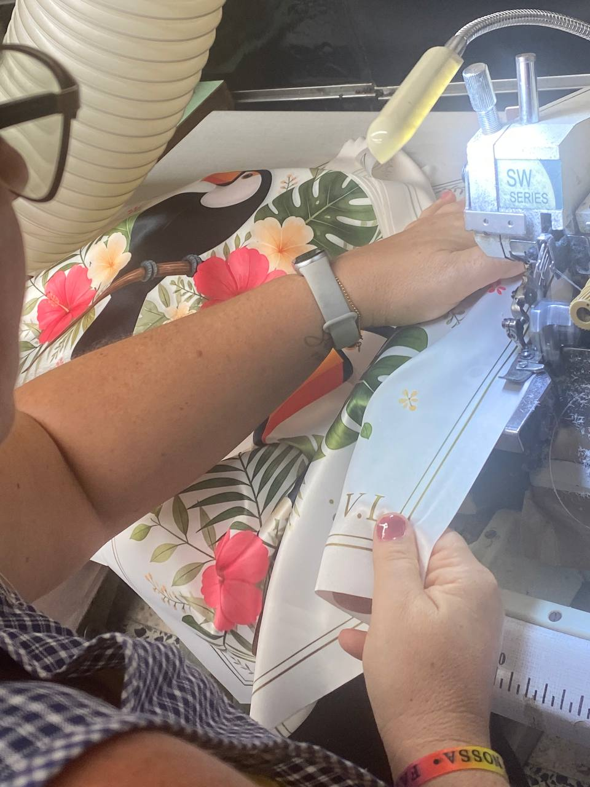
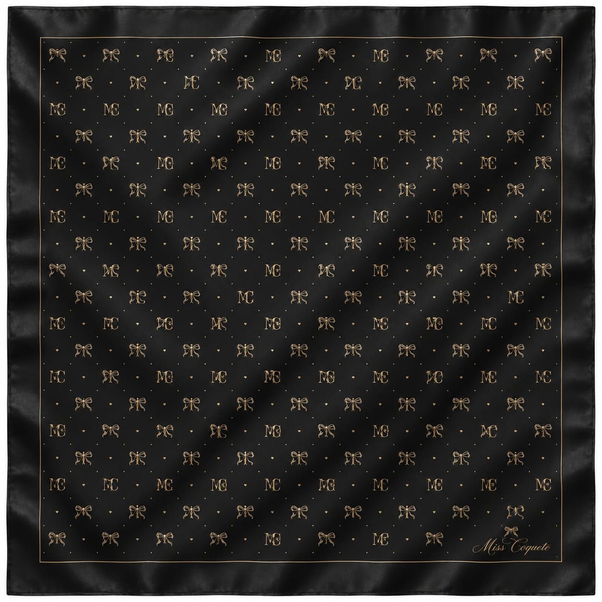

Amostras & protótipos
Interpretação de referências, desenvolvimento técnico, modelagem, corte, confeção e ajustes.
Made in Portugal · Since 2017
A Traços Fidalgos desenvolve amostras, protótipos, coleções e produção especializada em Portugal, com rigor técnico, atenção ao detalhe e acabamento de alto nível.

Da ideia à peça final: desenvolvimento, modelagem, amostras, acabamentos e produção em pequena/média série para marcas que não podem falhar.
O atelier
A Traços Fidalgos é uma empresa portuguesa de confeção premium e alta costura, registada desde 2017 e sediada em Perafita, Matosinhos.
Trabalhamos com marcas, estilistas e clientes nacionais e internacionais que procuram desenvolvimento cuidado, flexibilidade, qualidade e confiança na produção europeia.
“O futuro do têxtil europeu não está na produção barata, mas sim na produção inteligente, próxima, técnica e responsável.”
Serviços
Serviços para marcas, boutiques, designers e projetos que precisam de um parceiro de confeção fiável em Portugal.
Interpretação de referências, desenvolvimento técnico, modelagem, corte, confeção e ajustes.
Pequenas séries premium para marcas, boutiques e private label, com atenção ao caimento e acabamento.
Produção pequena/média série em Portugal, ideal para marcas que valorizam proximidade e controlo.
Vestidos, blusas statement, kimonos, lenços, tailoring, outerwear e projetos com detalhe técnico.
Portfólio




Processo de trabalho
Para marcas
Ideal para marcas que procuram:
Contacto
Envie-nos referências, desenhos, fichas técnicas ou uma descrição da peça/coleção que pretende desenvolver. Respondemos com uma análise inicial e próximos passos.